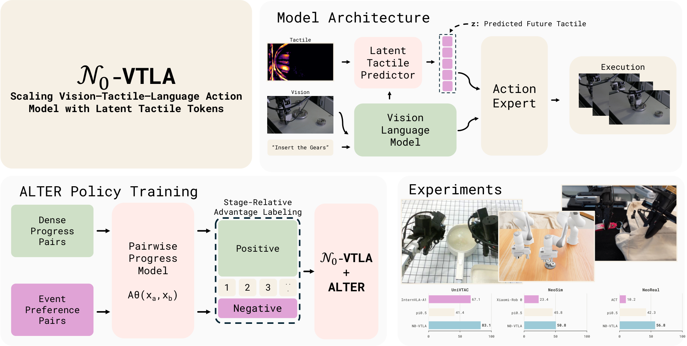

N₀-VTLA
触觉不作为观测送进上下文，而是被预测成一组潜在 token，再去条件化动作专家。
N₀-VTLA: Scaling Vision–Tactile–Language–Action Model with Latent Tactile Tokens
二十项仿真任务平均成功率 63.8%，最强基线 44.0%；九项真机任务成功率全部领先，均值 47.2% 对 29.4%。
01这篇要解决什么？
前面的 VLA 只看相机、语言与本体状态，接触和滑移只能间接推断。这篇要理解的是触觉该以什么形式进入策略：它既不把触觉塞进视觉语言前缀，也不用当前读数直接引导去噪，而是让模型先估计接下来一块动作会造成的接触变化，再用这个估计条件化动作生成。
02先看一个场景
插头对着插座往下压。视觉看上去已经对准，实际却顶在插座边缘。只靠相机的策略此刻察觉不到任何异常：画面里插头仍在该在的位置，于是它继续压下去，直到这次尝试结束。抓一只空塑料瓶让它立住也一样，夹到能提起来和夹住却不提起，在画面上几乎没有区别。
03方法怎样运转？

- 01
基座与动作容器都沿用现成件
接的是已发布的 π₀.₅ 权重：PaliGemma 主干加流匹配动作专家。动作与状态统一进一个 32 维容器，每臂占 10 维，含 3 维位置、6 维 rot6d 旋转与 1 维夹爪，其余 12 维恒零，单双臂数据因此共存。作者又在自建的 NeoData 上预训练一轮。
- 02
触觉先变成差分图，再变成十个 token
策略从不看原始触觉帧。回合开头夹爪张开静止至少 0.5 秒，那一帧记为零接触基准；之后每帧在像素上减去基准得到接触差分图，交给冻结的 DINOv2 编码，后接可训练线性投影。每视角出 10 个 token：一个 class token 加 3×3 池化的 9 个空间 token。
- 03
预测而不是反应：潜在触觉 token
一个轻量预测器读这些差分 token 与上下文化的视觉语言前缀，蒸馏成 10 个潜在触觉 token z。目标是同一编码器作用在未来 50 步触觉变化上、按视角平均的 z*，损失为对称 InfoNCE 加粗差分场 L1。触觉不进前缀，z 接在动作后缀最前面，自己不出动作。
- 04
三段式把新通路接上去
每段从上一段的检查点继续。第一段冻住整个基座，只训预测器、触觉投影与重建头；第二段冻住触觉感知栈，屏蔽视觉语言前缀对动作查询的注意，逼专家只能从 z 读触觉；第三段解冻除触觉编码器主干外全部参数，只用动作损失联合训练。之后每任务再单独适配。
- 05
推理：整块执行，另有一条离线改进通路
一次前缀编码加十步 Euler 去噪出长 50 的动作块，绝对末端位姿经逆运动学落成关节指令；合同要求整块执行完再请求下一块，截断重规划会丢掉块尾的夹爪闭合命令。作者另用 ALTER 在固定部署语料上按阶段相对进度打二元优势标签重训策略。
backbone = π0.5 已发布权重 (PaliGemma + 流匹配动作专家)
f_enc = DINOv2(冻结) + 可训练线性投影 # 换新传感器只训这层投影
# Stage1 冻基座：z 对齐 z* = 各视角 f_enc(tac[τ+50] - tac[τ]) 的均值，InfoNCE + L1
# Stage2 冻触觉栈：屏蔽视觉语言前缀，只训 latent→expert 投影与动作专家
# Stage3 解冻除 f_enc 主干外全部参数，仅用动作损失联合训练
reset(): tac0 = 本回合第一帧 # 零接触基准；某视角缺失则按无接触处理
while 任务未完成:
g = f_enc(tac[τ] - tac0) # 每视角 10 个 token，不进视觉语言前缀
z = predictor(g, prefix(图像, 指令, 状态)) # 10 个潜在触觉 token
A = flow_match(expert, prefix, z, steps=10) # 长 50 的动作块
execute(A, 全部 50 步) # 截断重规划会丢掉块尾的夹爪闭合命令
# 没有成功检测：抬臂重试是策略自己采出来的行为，不是被判定触发的方法与结果的原文定位见本页引用。
04跟着这个场景走一遍
教学推演：回到上面的场景。第一步，接住这件事的不是一个全新模型，而是现成的 π₀.₅ 权重：主干读图像、指令与离散化状态，流匹配动作专家出长 50 的动作块，作者只是在自建的 NeoData 上把它重新预训练了一遍。第二步，触觉要先变成模型读得懂的东西——回合开头夹爪张开静止半秒，那一帧被记成零接触基准；插头顶到插座边缘时，当前帧减去基准得到一张接触差分图，经冻结的 DINOv2 与一个线性投影变成 10 个 token。第三步是这篇的分岔口：这 10 个 token 既不进视觉语言前缀，也不直接进动作专家，而是交给一个轻量预测器，连同上下文化的前缀蒸馏成潜在触觉 token z；z 的训练目标是 50 步之后的触觉变化，所以它估计的是接下来这块动作会造成什么接触，而不是刚才碰到了什么。第四步，z 被投影后接在动作后缀前面，动作 token 注意它，它自己不出动作；专家之所以会用它，是因为第二段训练专门屏蔽了视觉语言前缀，让降低动作损失的唯一通路经过 z。第五步，运行时一块动作要整块执行完再请求下一块。顶到边缘之后抬臂、重对准、再插一次，这个行为是策略在新观测下自己采出来的，系统里没有任何模块判定过这次插入失败；ALTER 的进度模型确实能在曲线上看出物体掉落，但它只在离线打标签时使用，部署时并不在环。
05实验到底表现怎样？
九项 NeoReal 真机任务各有自己的试验次数预算，同时报成功率与 100 分制的阶段进度分；仿真侧是 UniVTAC 的八项加 NeoSim 的十二项，每个策略用 100 条演示训练，按模拟器的完成判据算成功率。下表取自表 1、表 2 与图 7。
作者报告的实验结果 · v1
| 设置 / 方法 | π₀.₅ | N₀-VTLA |
|---|---|---|
| UniVTAC 八项均值（表 1） | 41.4% | 83.1% |
| NeoSim 十二项均值（表 2） | 45.8% | 50.8% |
| 其中八项双臂任务均值（表 2） | 34.3% | 39.4% |
| NeoReal 九项成功率均值（图 7） | 29.4% | 47.2% |
| NeoReal 九项进度分均值（图 7） | 42.3 | 56.8 |
原始证据：潜在触觉 token：§2.2 ↗ · 三段式训练：§4.2 ↗ · 仿真结果：表 1–2 ↗ · 表示分析：§5.5 ↗
增益很不均匀：UniVTAC 八项从 41.4% 抬到 83.1%，NeoSim 十二项只从 45.8% 抬到 50.8%，其中双臂那八项两者都不到四成。真机九项 47.2% 的均值同样说明离可靠还远；进度分之所以要单独报，正因为不少长程任务的整任务成功率接近零。
06收益来自哪里，又停在哪里？
消融与机制证据
这篇没有逐个组件的成功率消融，支撑设计的是表示层证据：第一段之后，潜在 token 在约 32 个候选里以 92.3% top-1 命中未来触觉目标，只用当前触觉编码检索是 57%，随机是 3.2%；候选扩到 128 时两者为 81% 与 40%。free-latent 变体只在文字里提到，没有成功率。
结论的适用边界
模型来源要分三层算。现成的部分是 π₀.₅ 的已发布权重与冻结的 DINOv2 触觉编码器主干，两者都不为这篇重新训练。自训的部分则很大：预测器、触觉投影、重建头、latent 到专家的投影全部新初始化，而第三段联合训练又把动作专家与视觉语言主干一起解冻，再加上在 NeoData 上从头走一轮多平台预训练，以及 ALTER 里那个基于 π₀.₅ 结构的成对进度模型，所以这不是在基座上挂一个轻量模块。数据与算力这层论文自己留了白：NeoData 的规模与条目构成推给了配套的数据报告，算力一节明确说省略硬件型号、卡数与吞吐，因此复现成本无法从这篇估算。评测口径还有一处没写清——表里的 π₀.₅ 一行是否也在 NeoData 上预训练过，原文只说在统一协议下内部复现，这直接影响能否把差距全部记到触觉通路头上。
07放回全书的脉络
与 RT-2 对照：那边把动作离散成 token 占用词表，这边把触觉压成连续潜在 token 只做条件；与 π₀.₅ 比，换的是条件来源而非训练配方。
08把阅读变成一个小研究
不必重训大模型。取一条已有策略，分别喂当前触觉、未来触觉真值与全零，比较接触段与自由空间段的动作差异。
先自己回答：这项实验怎样才有解释力？
若分歧只出现在接触段，说明触觉在自由空间里确实是噪声；若喂真值明显好过喂当前值，才支持该预测而不是该反应这一主张。
- 用自己的话说出这篇改变了哪个模块。
- 画出它的输入、输出和一次失败如何被处理。
- 复述一个结果，同时说清基线、指标与实验条件。这一问不给答案，材料在第 05 节。
先自己答，再看前两问的参考答案
这篇改了哪个模块改的是策略内部的条件来源：在感知与动作之间新开一条触觉通路，触觉不进视觉语言前缀，而是先差分、编码，再被蒸馏成一组潜在 token 直接条件化流匹配动作专家。没改的部分同样要记住——动作与状态仍是继承自 π₀.₅ 的 32 维容器，动作块长度、去噪步数、视觉语言入口都照旧，底层仍是逆运动学加关节指令，没有轨迹规划与碰撞检测；策略外面没有规划器、技能库或验证器，触觉编码器主干全程冻结，作者只训它后面那层线性投影。
输入、输出与一次失败如何被处理输入是多路相机图像、离散化后写进前缀的本体状态、一句语言指令，以及每根参与操作的手指的触觉图像；触觉图像先减去该回合开头那帧零接触基准，再经冻结编码器与线性投影变成 token，这些 token 只走预测器，既不进视觉语言前缀，也不直接进动作专家。输出是长 50 的动作块，以绝对末端位姿加夹爪通道表示，经逆运动学变成关节指令，一次请求出一整块，合同要求整块执行完再请求下一块。失败这条通路要明确写出来：部署时没有成功检测器，没有验证器，也没有外部触发的恢复动作。插入被挡住后抬臂重对准，是策略在新观测下采出来的行为，不是某个模块判定失败后调用的；ALTER 的成对进度模型能在曲线上看出掉落与回退，但它只在离线打标签时使用，部署提示恒取正标签，运行时并不在环。某个视角的触觉流缺失时，控制器把该视角当成自身基准，也就是当作没有接触，而不是报错。
触觉不作为观测送进上下文，而是被预测成一组潜在 token，再去条件化动作专家。
↗带着位置回到原文
首发日期用于时间排序；以下方法与结果对应 v1。数据为论文作者报告，本讲义没有独立复现实验。
QA就这一页提问或讨论
对某个数字、某条边界或某个推演有疑问，欢迎直接留言：讨论按页面分开，回复会保留在 XinrunXu/awesome-agentic-robotics-papers 的 Discussions 里，需要一个 GitHub 账号。